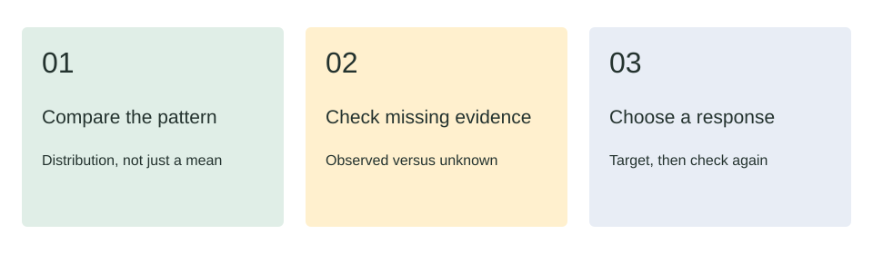
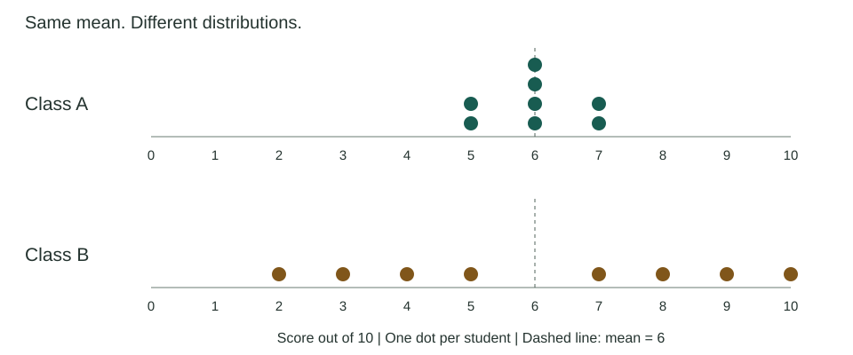

Start here / 3 minutes
From a score to a useful next step

You are preparing for a mathematics team meeting. Two classes have the same average score. Should they receive the same follow-up lesson? Work through a small fictional example, then write a short recommendation.
By the end, you will be able to
- Compare two score distributions without treating a class mean as an individual diagnosis.
- Separate missing responses from observed incorrect answers and name the denominator in a percentage.
- Recommend a targeted response, acknowledge uncertainty, and specify evidence to collect next.
What you need
Familiarity with percentages and classroom assessment. No statistical software or prior data-analysis course is required. A mean is the sum of the observed scores divided by the number of observed scores.
Choose your route
Follow the modules in order, or revisit any module from the course outline. Each example is available as both a visual and a data table. You can draft your final response as prose or bullets; alternatively, explain it aloud using the same rubric before typing a short summary.
New portfolio demonstration, not a Canvas course or a record of prior client delivery. All learners, scores, and scenarios are fictional. Do not enter real student information.
Begin module 1Module 1 / 7 minutes
Look beyond the mean
Objective: distinguish equal averages from equal learning needs.
Both classes completed the same 10-point assessment under comparable conditions. Each has eight observed scores. The means are both 6 out of 10, but the distributions tell different stories.

| Class | Scores in ascending order | Mean | Range |
|---|---|---|---|
| A | 5, 5, 6, 6, 6, 6, 7, 7 | 6 | 2 |
| B | 2, 3, 4, 5, 7, 8, 9, 10 | 6 | 8 |
A worked interpretation
Class A is clustered near the mean. Class B has wider variation, so its average hides more of the differences between students. This does not prove why scores differ or identify any particular misconception. Examine question responses and student work before choosing support.
Try it: compare the ranges: 7 minus 5 equals 2 for A; 10 minus 2 equals 8 for B. Range describes the spread between the smallest and largest observed scores, not the quality of teaching.
Module 2 / 6 minutes
Account for missing responses
Objective: state a percentage with its denominator and describe what remains unknown.
Ten students were assigned an exit ticket. Eight responded: six answered correctly and two incorrectly. Two did not respond. Their reasons are not recorded.
| Measure | Calculation | Interpretation |
|---|---|---|
| Accuracy among respondents | 6 / 8 = 75% | Of those who responded, 75% were correct. |
| Response rate | 8 / 10 = 80% | 80% of assigned students provided a response. |
| Correct responses among all assigned | 6 / 10 = 60% | 60% of all assigned students supplied a correct answer. |
Do not silently change the question
Seventy-five percent and 60% are both valid calculations, but they answer different questions. Neither establishes mastery. A missing response is not observed evidence of an incorrect solution. Check access, attendance, time, and follow-up work before interpreting it.
Module 3 / 5 minutes
Choose the next step
Objective: connect a tentative interpretation to a targeted, reversible instructional response.
The exit ticket asked students to distribute a negative sign. Both incorrect responses show the same sign error. You have not yet spoken with those students or collected work from the two nonrespondents.
Evidence, interpretation, action
- Evidence: two submitted responses contain the same sign error; two responses are missing.
- Interpretation: the repeated error suggests a possible need for focused practice. It does not show whether the cause is conceptual, procedural, or a momentary slip.
- Action: ask the two respondents to explain their reasoning, then use a worked example and a fresh item. Contact the nonrespondents about access and arrange a low-stakes opportunity to respond.
- Check: compare explanations and a fresh response after the follow-up. Do not treat repetition of the original question as independent evidence of learning.
Apply / 4 minutes
Write your decision brief
Use the exit-ticket scenario to recommend a next step for your team. Include the observed evidence, one limitation, a specific action, and a way to check whether it helped. Use a short paragraph or four bullets. This is a self-review, not an automated evaluation of your writing.
Saved on this device when browser storage is available. Use only the fictional scenario. You can download a plain-text copy or reset the attempt to remove it.
Example decision brief
Six of eight respondents answered correctly; two of ten assigned students have not responded. The two submitted errors share a sign pattern, but one question cannot establish mastery or its cause. I would ask those students to explain their reasoning and offer a worked example, while checking access with nonrespondents separately. I would then use a fresh item and a brief explanation to decide whether further support is needed.
Knowledge-check answer guide
1: Greater variation in B calls for examining individual work. Equal means do not establish equal needs.
2: Report 6/8 correct and 2/10 missing separately; neither number is a mastery estimate.
3: Use targeted follow-up and fresh evidence. A single item does not support placement decisions.